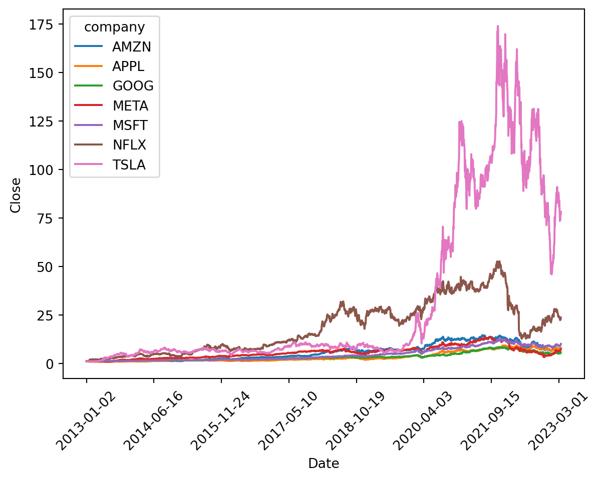
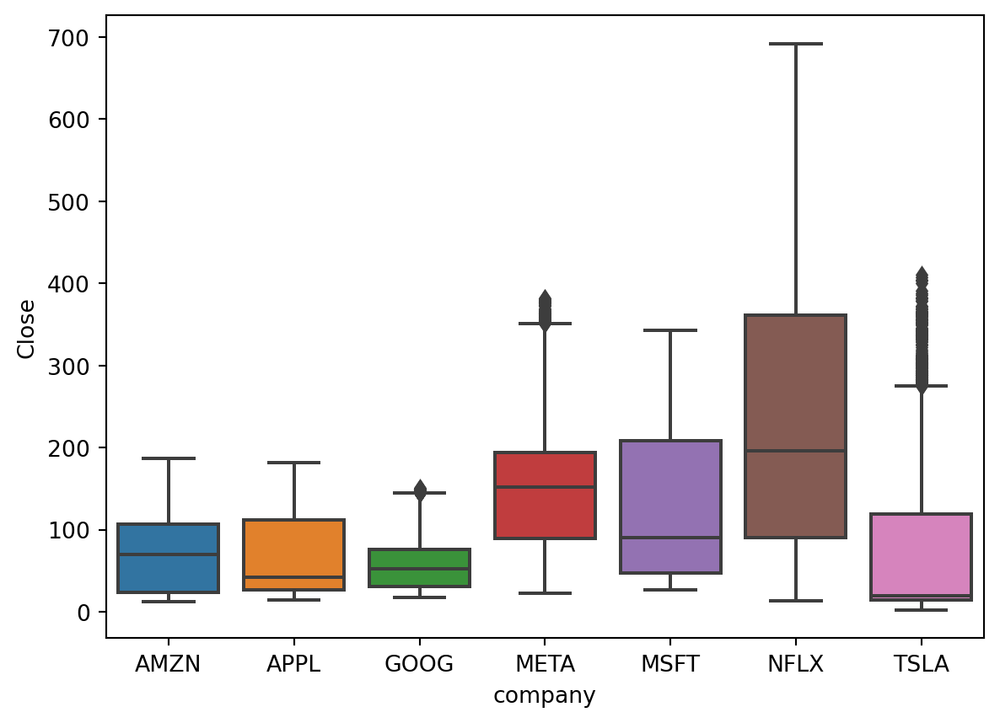
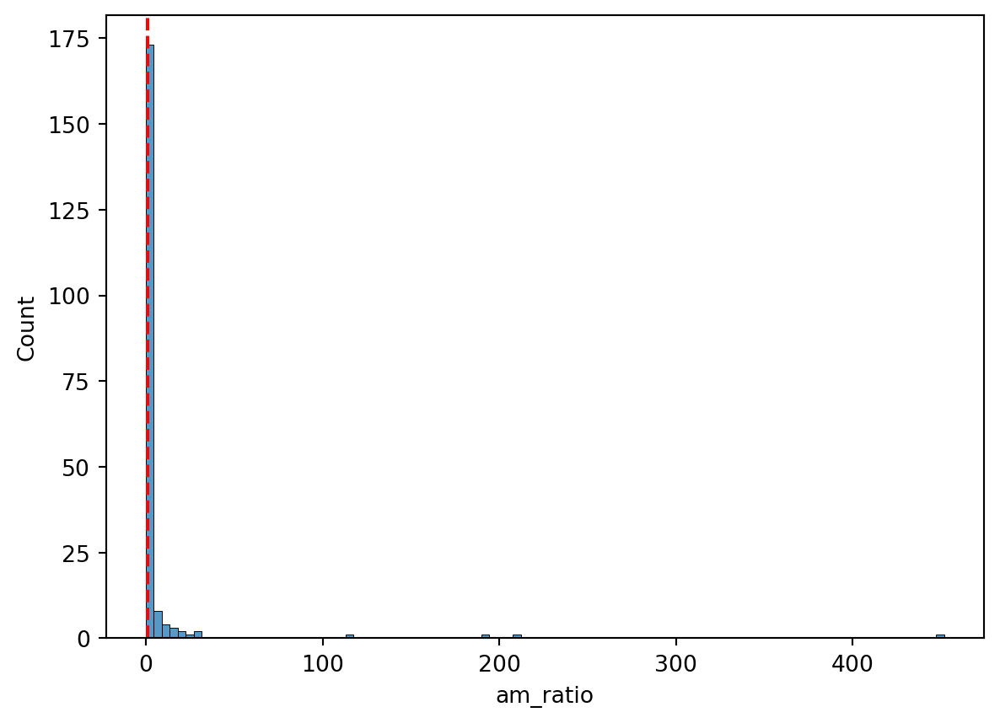
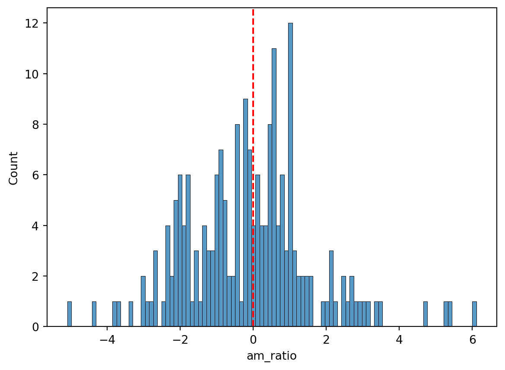
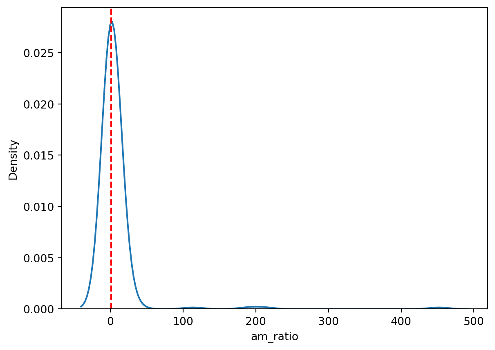
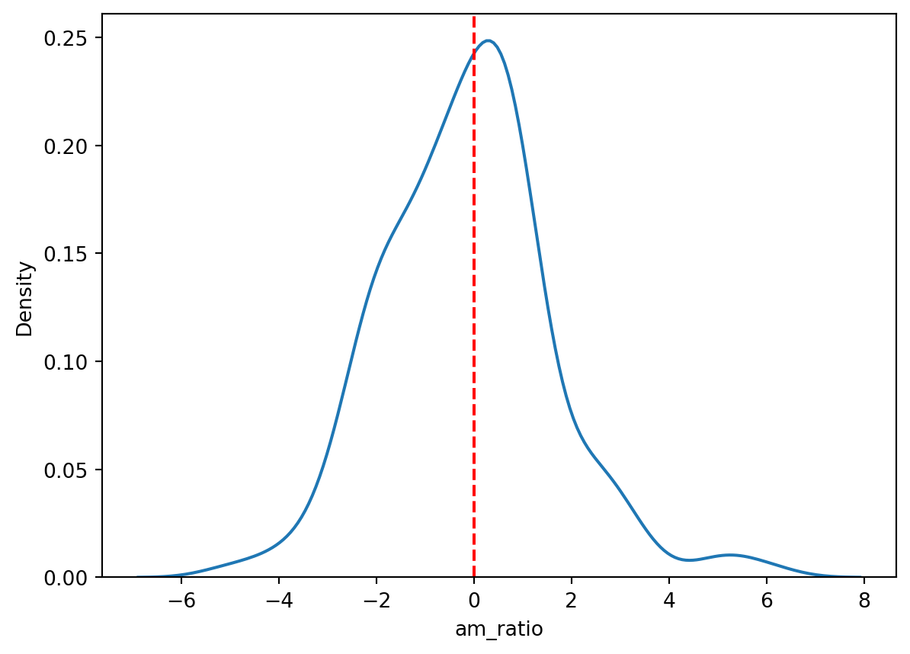
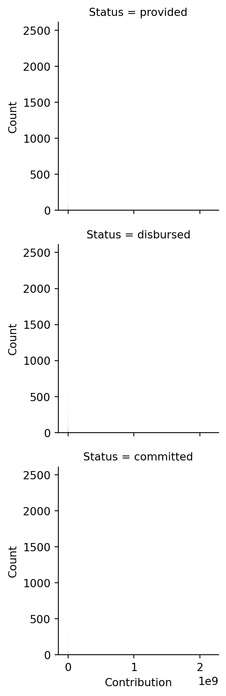
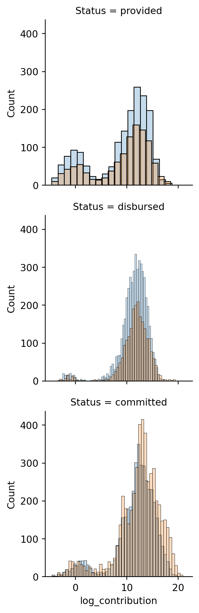
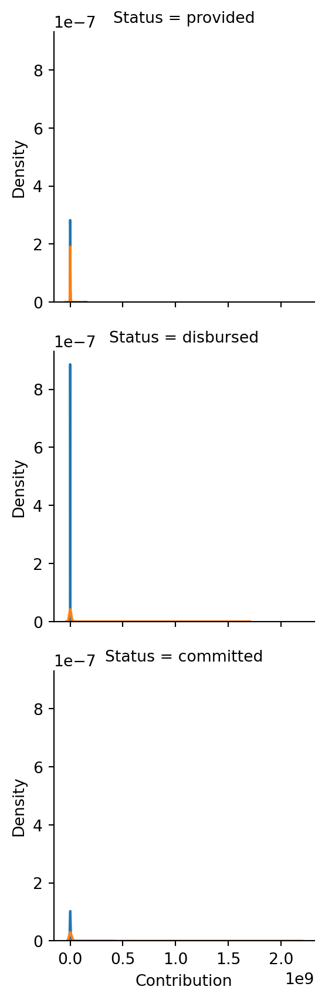
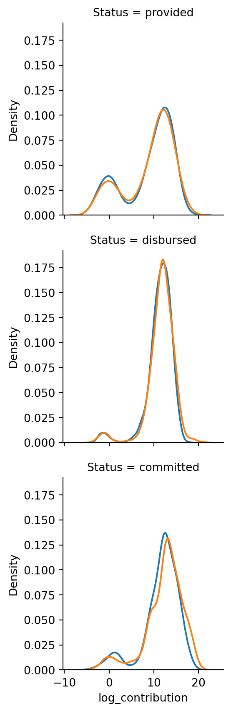

import pandas as pd
import seaborn as sns
import matplotlib.pyplot as plt
import numpy as npDANL 210: Data Preparation and Management
Homework Assignment 2
Direction for Homework Assignment 2
Write a Python code to answer each question.
Make at least some simple comment (
# ...) in each question.Import Python libraries you need here.
Question 1
Consider the stock DataFrame for Question 1.
path = 'https://bcdanl.github.io/data/stocks2013_2023.csv'
stock = pd.read_csv(path)Q1a
What are the minimum, first quartile, median, thrid quartile, maximum, mean, and standard deviation of Close and Volume for each company?
# Group stock data by company and get descriptive statistics for the Close and Volume columns
q1a = stock.groupby('company')['Close', 'Volume'].describe()
# Rename columns to have the format 'column_name'_'statistic'
q1a.columns = q1a.columns.get_level_values(0) + '_' +\
q1a.columns.get_level_values(1)/var/folders/07/nm9t4t294vb5jz6vtqnb6pxm0000gn/T/ipykernel_72913/1541856862.py:2: FutureWarning:
Indexing with multiple keys (implicitly converted to a tuple of keys) will be deprecated, use a list instead.
Q1b
Find the 10 largest values for Volume. What are the companies and dates associated with those 10 largest values for Volume?
# Calculate dense ranking of stock volumes and add it as a new column to a copy of the stock dataframe
ranking = stock['Volume'].rank(method='dense', ascending=False)
q1b = stock.copy()
q1b['ranking'] = ranking
# Sort the dataframe by ranking and select the top 10 stocks
q1b = (
q1b
.sort_values(by='ranking')
.query('ranking <= 10')
)Q1c
Calculate the Z-scores of Open and Close for each company using apply().
q1c = (
stock.set_index(['company', 'Date']) # set company and Date as the index
.groupby('company') # group the data by company
.apply(lambda x: ( x - x.mean() ) / x.std() ) # standardize the Close and Volume for each company
.reset_index() # reset the index to default
)Q1d
Use the transform() method on the stock data to represent all the values of Open, High, Low, Close, Adj Close, and Volume in terms of the first date in the data.
To do so, divide all values for each company by the values of the first date in the data for that company.
# Set multi-index for DataFrame using 'company' and 'Date' columns
q1d = stock.set_index(['company', 'Date'])
# Divide each element of q1d by the first element of the corresponding 'company' group
q1d = ( q1d / q1d.groupby('company').transform('first') )Q1e
Provide both seaborn code and a simple comment to describe the daily trend of normalized values of Close for each company in one plot. The normalized values of Close are the one calculated from Q1d.
g = sns.lineplot(q1d, # create a line plot using Seaborn
x = 'Date', y = 'Close', # specify x and y axes
hue = 'company') # specify color grouping by company
import matplotlib.dates as mdates # import Matplotlib date module
g.xaxis.set_major_locator(mdates.YearLocator()) # set x-axis ticks to show year
plt.xticks(rotation=45) # rotate x-axis labels for better readability(array([-365., 0., 365., 730., 1096., 1461., 1826., 2191., 2557.]),
[Text(0, 0, ''),
Text(0, 0, ''),
Text(0, 0, ''),
Text(0, 0, ''),
Text(0, 0, ''),
Text(0, 0, ''),
Text(0, 0, ''),
Text(0, 0, ''),
Text(0, 0, '')])
Q1f
Create a box plot of Close for each company in one plot. Make a simple comment on the plot.
sns.boxplot(stock,
x = 'company', y = 'Close')<AxesSubplot:xlabel='company', ylabel='Close'>
Question 2
Load the DataFrfame for Question 2.
path = 'https://bcdanl.github.io/data/climate_finance.csv'
climate_finance = pd.read_csv(path)Adaptation involves taking actions to reduce the actual or expected damages from climate change.
Mitigation involves taking actions to reduce the emissions of greenhouse gases that are responsible for climate change.
Q2a
How many parties have provided or disbursed positive funding contributions to other countries or regions for their adaptation projects for every single year from 2011 to 2018?
q2a = (
climate_finance
.query('Status == "provided" or Status == "disbursed"') # Select only the rows where status is "provided" or "disbursed"
.query('`Type of support` == "adaptation"') # Select only the rows where the type of support is "adaptation"
.groupby(['Party', 'Year']) # Group the data by party and year
.agg({'Contribution': 'sum'}) # Calculate the sum of contributions for each party and year
.reset_index() # Reset the index of the dataframe
.query('Contribution > 0') # Select only the rows where the contribution is greater than 0
.groupby(['Party']) # Group the data by party
.size() # Count the number of rows for each party
.reset_index(name='n') # Reset the index of the dataframe and rename the "size" column to "n"
.query('n == 8') # Select only the rows where the value of "n" is 8
)
q2a.shape[0] # Output the number of rows in the resulting dataframe
q2a| Party | n | |
|---|---|---|
| 2 | Canada | 8 |
| 6 | Finland | 8 |
| 10 | Iceland | 8 |
| 11 | Ireland | 8 |
| 12 | Japan | 8 |
| 16 | Netherlands | 8 |
| 17 | New Zealand | 8 |
| 20 | Portugal | 8 |
| 22 | Slovakia | 8 |
| 24 | Sweden | 8 |
| 25 | Switzerland | 8 |
Q2b
For each party, calculate the total funding contributions that were disbursed or provided for mitigation projects for each year.
q2b = (
climate_finance
.query('Status == "provided" or Status == "disbursed"')
.query('`Type of support` == "mitigation"')
.groupby(['Party', 'Year'])
.agg({'Contribution': 'sum'})
.reset_index()
)
q2b| Party | Year | Contribution | |
|---|---|---|---|
| 0 | Australia | 2011 | 5.80 |
| 1 | Australia | 2012 | 36.80 |
| 2 | Australia | 2013 | 38.32 |
| 3 | Austria | 2013 | 62227828.00 |
| 4 | Austria | 2014 | 81472734.00 |
| ... | ... | ... | ... |
| 174 | United Kingdom | 2012 | 260.37 |
| 175 | United Kingdom | 2013 | 249.41 |
| 176 | United Kingdom | 2014 | 143.75 |
| 177 | United Kingdom | 2015 | 110.98 |
| 178 | United Kingdom | 2016 | 321.60 |
179 rows × 3 columns
Q2c
For each party, calculate the ratio between adaptation contribution and mitigation contribution for each type of Status for each year.
# Groupby Party, Year, Status, and Type of support and sum the contribution
q2c_tmp = (
climate_finance
.groupby(['Party', 'Year', 'Status', 'Type of support'])
.agg({'Contribution': 'sum'})
.reset_index()
)
# Filter out rows where the Contribution is 0 and keep only rows with a length of 2 groups
q2c_tmp = q2c_tmp[ q2c_tmp['Contribution'] != 0 ]
q2c_tmp = (
q2c_tmp
.groupby(['Party', 'Year', 'Status'])
.filter(lambda x: len(x) == 2)
)
# Create a separate dataframe for adaptation and mitigation contributions
q2ca = q2c_tmp[q2c_tmp['Type of support'] == 'adaptation']
q2cm = q2c_tmp[q2c_tmp['Type of support'] == 'mitigation']
# Drop the Type of support column, rename the Contribution column, and compute the adaptation to mitigation ratio
q2c = (
q2ca
.drop('Type of support', axis=1)
.rename(columns={'Contribution': 'adaptation'})
.assign(mitigation = q2cm['Contribution'].values,
am_ratio = lambda x: x['adaptation'] / x['mitigation'])
)Q2d
Provide both seaborn code and a simple comment to describe the distribution of the ratio between adaptation contribution and mitigation contribution, which is calculated in Q2c.
# Graph 1
sns.histplot(q2c, x='am_ratio', bins=100)
plt.axvline(x=1, color='red', linestyle='--')<matplotlib.lines.Line2D at 0x7f846d167e20>
# Graph 2
sns.histplot(q2c, x=np.log(q2c['am_ratio']), bins=100)
plt.axvline(x=0, color='red', linestyle='--')/Users/byeong-hakchoe/opt/anaconda3/lib/python3.9/site-packages/pandas/core/arraylike.py:397: RuntimeWarning:
invalid value encountered in log
<matplotlib.lines.Line2D at 0x7f846d170220>
# Graph 3
sns.kdeplot(q2c, x='am_ratio')
plt.axvline(x=1, color='red', linestyle='--')<matplotlib.lines.Line2D at 0x7f846bab8610>
# Graph 4
sns.kdeplot(q2c, x=np.log(q2c['am_ratio']))
plt.axvline(x=0, color='red', linestyle='--')/Users/byeong-hakchoe/opt/anaconda3/lib/python3.9/site-packages/pandas/core/arraylike.py:397: RuntimeWarning:
invalid value encountered in log
<matplotlib.lines.Line2D at 0x7f846bc041f0>
Q2e
Provide both seaborn code and a simple comment to describe how the distribution of Contribution varies by Type of support and Status.
# Graph 1
g = sns.FacetGrid(data=climate_finance,
row='Status',
hue='Type of support')
g.map(sns.histplot,
'Contribution',
alpha = .25)<seaborn.axisgrid.FacetGrid at 0x7f846bac3dc0>
# Log transformation
climate_finance['log_contribution'] = np.log(climate_finance['Contribution'])/Users/byeong-hakchoe/opt/anaconda3/lib/python3.9/site-packages/pandas/core/arraylike.py:397: RuntimeWarning:
divide by zero encountered in log
/Users/byeong-hakchoe/opt/anaconda3/lib/python3.9/site-packages/pandas/core/arraylike.py:397: RuntimeWarning:
invalid value encountered in log
# Graph 2
g = sns.FacetGrid(data=climate_finance,
row='Status',
hue='Type of support')
g.map(sns.histplot,
'log_contribution',
alpha = .25)<seaborn.axisgrid.FacetGrid at 0x7f846bce4f10>
# Graph 3
g = sns.FacetGrid(data=climate_finance,
row='Status',
hue='Type of support')
g.map(sns.kdeplot, 'Contribution')<seaborn.axisgrid.FacetGrid at 0x7f8464327a30>
# Graph 4
g = sns.FacetGrid(data=climate_finance,
row='Status',
hue='Type of support')
g.map(sns.kdeplot, 'log_contribution')<seaborn.axisgrid.FacetGrid at 0x7f846363e8e0>